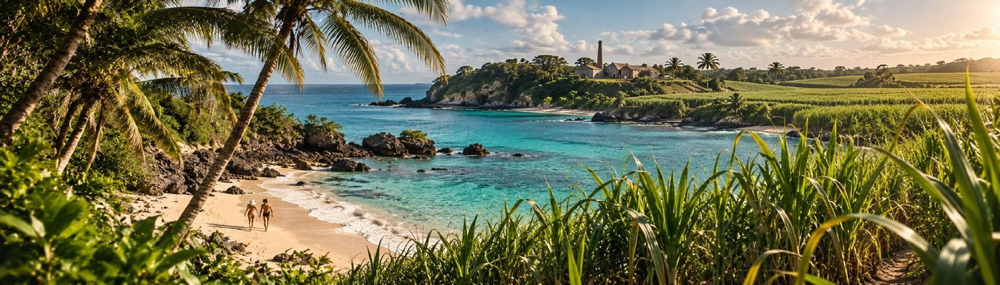
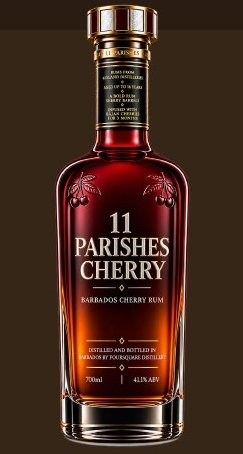
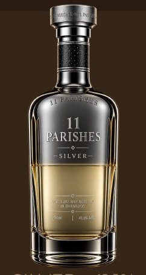
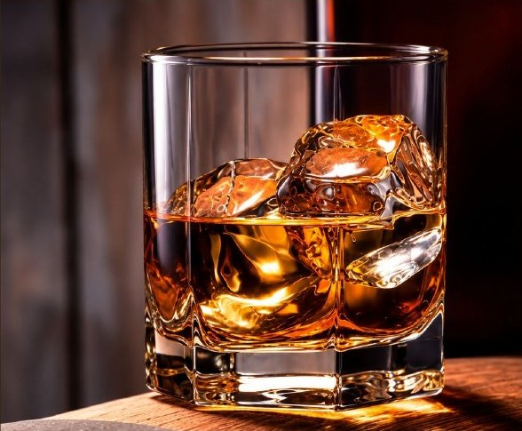
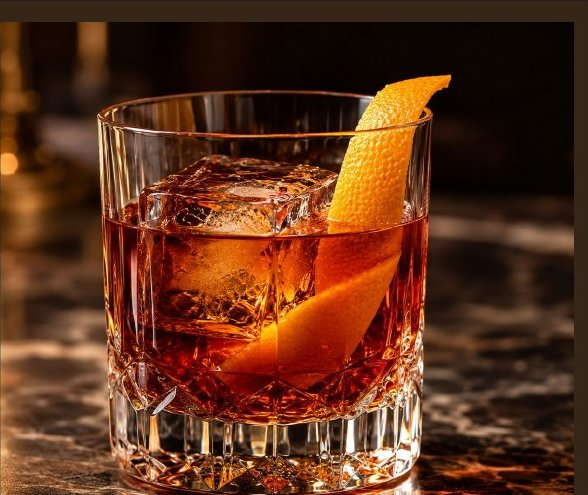
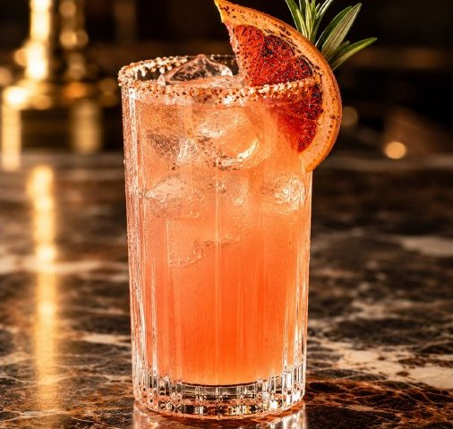

First · 2027
First · 2027
Black
42% ABVBiscuit, dark chocolate and caramel — made to be sipped neat and to lead a cocktail. The flagship.
The island that made rum
The brand in the glass — the eleven parishes of Barbados, poured for the world. Pure Barbados rum, aged in oak, nothing added.
First pours 2027 · Washington DC · London · Barbados

The liquid
No added sugar, no colouring, no flavouring. The colour and the character come from the cask — tropical years, not shortcuts.
Aged on the island, where the climate works the cask harder and every year counts double.
Rum and oak, nothing else — the colour, the sweetness and the finish are earned, not added.
Developed and blended by rum people, on the spirit’s home soil — the value stays on the island.
Provenance & supply
A Barbados supply platform that is hard to replicate — stocks and relationships across the island’s great houses.
Aged rum supply and bespoke development for Black.
Bajan Cherry production and selected aged rum.
Limited aged rum for premium expressions.
Small-batch, emerging-distillery provenance.
Supply relationships shown are in development — no partner is announced before the agreement is signed.
The portfolio
First · 2027
Biscuit, dark chocolate and caramel — made to be sipped neat and to lead a cocktail. The flagship.

Second · 2028Native Bajan cherry, ex-Bourbon rum and a PX sherry finish — the island in a glass.

Third · 2029The Daiquiri, Mojito and highball platform — bright, clean and built for volume serves.
And one more: a Founders Reserve of 280 numbered bottles — aged a minimum of eleven tropical years, never on general sale. The Founders Club.
Liquid on lips
Bartenders first, serves that sell it, and a rum that surprises people who thought they knew rum.

A sipping rum for people who reach for bourbon — smooth enough to change their minds.

The Old Fashioned and the Rum Manhattan — Black is built for the stirred, spirit-forward serve.

The Rum Paloma and the highball — the refreshing way in, for the rest of the night.
The house
House merchandise, made to the same standard as the liquid.
Tastings, takeovers and island gatherings — the brand lived, not just poured.
The Bajan Bar Academy — Barbados’ bar talent, trained on the spirit’s home soil.
The list
Join the list for first allocation, launch invitations and the story as it unfolds — from cane to cask to your glass. Write to us and we’ll keep your place:
richard@11parishesrum.com
The sign-up form arrives with the live site.